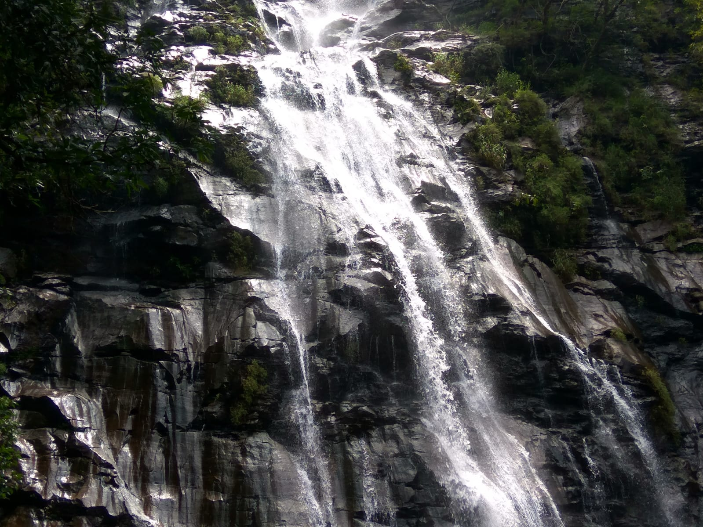

- 
Bee Fall
Popular water fall Bee Fall is situated at Pachmarhi Hill Station in the Central Indian state of Madhya Pradesh. Pachmarhi is a tourist spot on Satpura Hills. Although Pachmarhi is home to several waterfalls, Bee Fall is regarded as the most well-known and a must-see destination for tourists. Pachmarhi is a well-liked travel location for citizens of the country. All year long, there are tourism activities available here. It is a naturally occurring waterfall located far below a valley that can be accessed by jeep and then footpaths.
There are several water falls in and around Pachmarhi, but none compare to Bee Falls, where the waters of a perennial stream cascade 35 meters to the ground, providing visitors with an amazing view. Bee Falls is unique because it features a narrow stream of water that falls from a great height and appears to be melting silver. For individuals who have always loved the outdoors and the feeling of being in close proximity to Mother Nature, visiting during the summer months may prove to be a fortunate time to visit.
- Pandava Caves, Pachmarhi Overview These caves are believed to provide shelter to the Pandavas during their exile period. It is now a protected monument and tourists flock from all over India to see this place.
- Dhoopgarh, Pachmarhi Overview The highest point in the Satpura range, Dhoopgarh hilltop is a beautiful spot to see marvelous sunsets and sunrises.
- Jata Shankar caves, Pachmarhi Overview The Jata Shankar Caves in Pachmarhi are considered sacred as they are popularly believed to be the place where Lord Shiva concealed himself from the wrath of Bhasmasur.